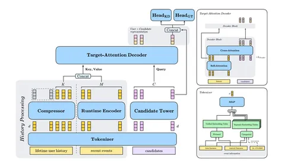

X-split ARGUS — модель для рекламного ранжирования, в которой длинную историю пользователя сжимаем заранее, а свежие действия обрабатываем онлайн. В названии “X” отсылает к механизму cross-attention, а “split” — к разделению истории на офлайн и рантайм.
Руководитель группы в R&D рекомендательных технологий Яндекса Александр Плошкин рассказал, зачем понадобилось это разделение и что получилось после внедрения в прод.
В прежней версии ARGUS история пользователя сводилась к одному вектору, который сопоставлялся с вектором рекламы. Всё, что могло пригодиться для оценки разных объявлений, нужно было уместить в это представление.
В X-split ARGUS сохраняем несколько токенов истории, а взаимодействие с конкретной рекламой переносим на этап ранжирования. Через cross-attention модель извлекает из истории информацию, важную для этого кандидата.
Но обрабатывать длинную историю заново при каждом запросе дорого — особенно на площадке с нагрузкой порядка сотен тысяч запросов в секунду. Поэтому прошлую историю заранее сжимаем в K токенов и переиспользуем при запросах. K здесь — небольшая константа, которую выбираем исходя из баланса между качеством и затратами на хранение, и в нашем случае K = 8. Свежие действия обрабатываем онлайн, чтобы учитывать текущий интерес пользователя.
Компрессор истории и ранкер обучаются совместно: на реальных кликах и предсказаниях большой модели-учителя, которая видит несжатую историю. Так удалось сохранить более 70% выигрыша учителя относительно прежней продовой модели.
В семидневном A/B-тесте:
• получили +2,96% к числу кликов;
• при том же рекламном бюджете ценность конверсий для рекламодателей выросла на +4,65%.
Модель уложилась в прежний лимит задержки. Для обслуживания того же трафика потребовалось на 15% больше онлайн-GPU.
В экспериментах подтвердили известное наблюдение: обновлять историю пользователя недостаточно. Даже со свежими данными преимущество модели постепенно снижается, если её веса остаются прежними. Поэтому в проде ежедневно обновляем представления истории и дообучаем модель.
В препринте подробнее разобрали архитектуру, дистилляцию, эксперименты с объёмом истории и детали эксплуатации.
ML Underhood
